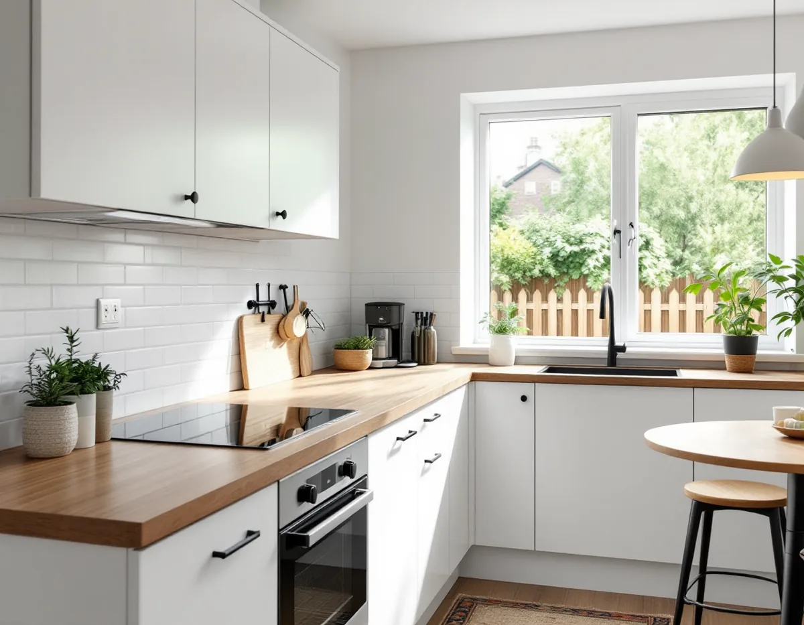
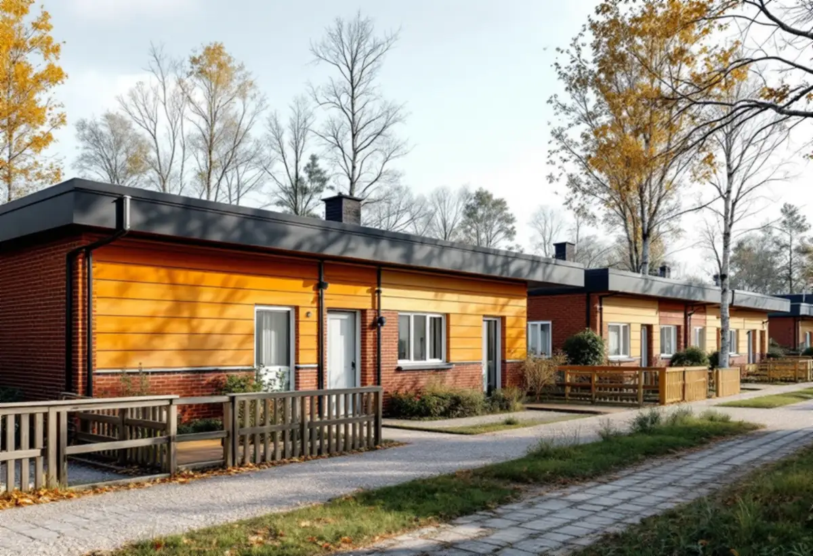

Platsbesök
Vi mäter köket och ser var stam, frånluft och el finns i just din hustyp.
Väsbys östra delar byggdes med radhus, kedjehus och atriumhus i enhetliga grupper, och många av köken är nu lika gamla som husen. Sedan sommaren 2026 gäller dessutom bara Boverkets nya byggregler. Geal Entreprenad AB gör om kök i Upplands Väsby med gratis platsbesök, skriftligt kostnadsförslag och ROT-avdraget direkt på fakturan.

Kommunens kunskapsunderlag för kulturmiljö beskriver hur de östra kommundelarna vuxit fram med en stor andel småhus och radhus, placerade som separata enklaver längs säckgator. Husen har en eller två våningar, ibland två våningar i suterräng, och platta eller flacka tak. Exempel finns i Sjukyrkoberget, Skälby, Fresta och Odenslunda, men också i Apoteksskogen.
Underlaget betonar att grupperna är olika sinsemellan men enhetligt utförda inom varje grupp. För ett kök betyder det ofta att planlösningen är densamma i hela längan: köket ligger på samma ställe, med samma mått och samma dragning av stam och frånluft. Det gör det lättare att förutse vad som finns bakom skåpen.
Vägledningen i underlaget säger att tillbyggnader som bryter ursprungsvolymen bör undvikas. Ett större kök får därför oftast hittas inne i huset, till exempel genom att öppna mot matplatsen eller flytta en lätt mellanvägg, snarare än genom en utbyggnad mot gatan.

Upplands Väsby kommun skriver att Boverkets nya byggregler trädde i kraft den 1 juli 2025 och ersatte de tidigare byggreglerna BBR och EKS. Under en övergångsperiod till och med den 30 juni 2026 gick det att välja det gamla eller det nya regelverket. Efter den 1 juli 2026 gäller bara de nya reglerna.
De nya reglerna är funktionsbaserade. De anger vad byggnaden ska klara, inte hur den ska byggas, och kommunen påpekar att byggherren ska kunna visa hur kraven uppfylls, till exempel med teknisk dokumentation, intyg eller beräkningar. I en anmälan ska du ange vilket regelverk du följer.
För ett kök märks det främst när arbetet kräver anmälan, till exempel en ny fläkt som ändrar flödena eller en ändring i bärande konstruktion. Då samlar vi produktblad och beskrivningar så att du har underlaget som kommunen kan be om.
Elsäkerhetsverket skriver att de flesta elinstallationsarbeten ska utföras av ett registrerat elinstallationsföretag, och att förändringar i den fasta installationen, till exempel ett nytt uttag i köket eller elledningar i väggarna, ska göras av ett sådant företag. Att byta ett ojordat vägguttag mot ett jordat får du inte heller göra själv.
Det du får göra med rätt kunskap är bland annat att byta glödlampor, lamphållare och en fast ansluten ljusarmatur i torra utrymmen, och att byta ett befintligt uttag eller en strömbrytare på högst 16 A i egen dosa. Att fast ansluta en elektrisk produkt till anläggningen, till exempel en fast ansluten spis, räknas däremot som elinstallationsarbete.
Innan du anlitar ett elföretag ska du enligt Elsäkerhetsverket kontrollera att det är registrerat hos myndigheten, vilket går att göra i tjänsten Kolla elföretaget. Vi samordnar elarbetet i köket med snickeri och VVS så att allt görs i rätt ordning.
Enligt kommunens sida om tillbyggnad krävs inget bygglov för en tillbyggnad om alla lovfria tillbyggnader på tomten tillsammans är högst 30 kvadratmeter, om den inte går över taknocken och om den ligger minst 4,5 meter från tomtgränsen. Med grannens skriftliga medgivande får den ligga närmare.
Bygglov krävs om byggnaden är kulturhistoriskt värdefull eller ligger i ett kulturhistoriskt särskilt värdefullt område. Kunskapsunderlaget pekar till exempel ut villorna och radhusen längs Oxundavägen som ett särskilt värdefullt bebyggelseområde. Även när tillbyggnaden är lovfri kan anmälan krävas för ingrepp i bärande stomme och för nya installationer för vatten, avlopp och ventilation.
För husen med platta tak är det dessutom klokt att planera var köksfläktens kanal ska gå ut innan tillbyggnaden ritas. Mer om taken finns under takläggare i Upplands Väsby.
Vi mäter köket och ser var stam, frånluft och el finns i just din hustyp.
Vi bedömer om något i planen kräver anmälan och vilket underlag som då behövs.
Rivning, el, VVS, snickeri och montering redovisas var för sig.
Gamla skåp tas bort och el, rör och fläkt dras enligt den nya planen.
Golv och väggar görs klara och stommen monteras.
Spis och vitvaror ansluts av elföretaget och vi går igenom köket med dig.
Skatteverket räknar det som rotarbete att modernisera elen, till exempel att byta och installera vägguttag och elcentraler och montera inbyggda spotlights. Även köksinredning och vitvaror ger avdrag när de monteras vid en omfattande renovering. Avdraget är 30 procent av arbetskostnaden, högst 50 000 kr per person och år.
Är huset yngre än fem år gäller särskilda regler. Material ger inget avdrag, och vi drar avdraget direkt på fakturan.
Om köket stannar på samma plats i planen, hur mycket av elen som behöver förnyas, om en mellanvägg ska flyttas och om fläktkanalen behöver en ny väg ut genom ett platt tak. Efter ett gratis besök får du ett skriftligt kostnadsförslag.
Planering, el, VVS, fläkt och väggar.
Köksrenovering i Stockholm →Takbyte, takbesiktning och plåtarbeten.
Takläggare i Upplands Väsby →Bollstanäs, Vilunda och Runby.
Takrenovering i Upplands Väsby →Radhus, kedjehus och villor i Väsby.
Målare i Upplands Väsby →